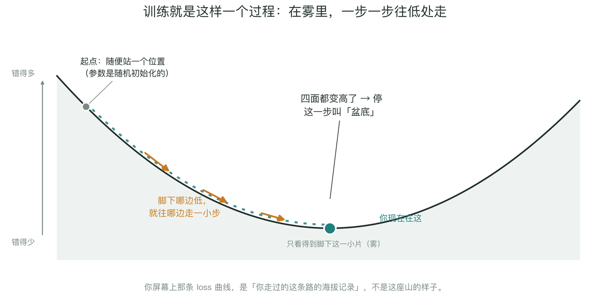
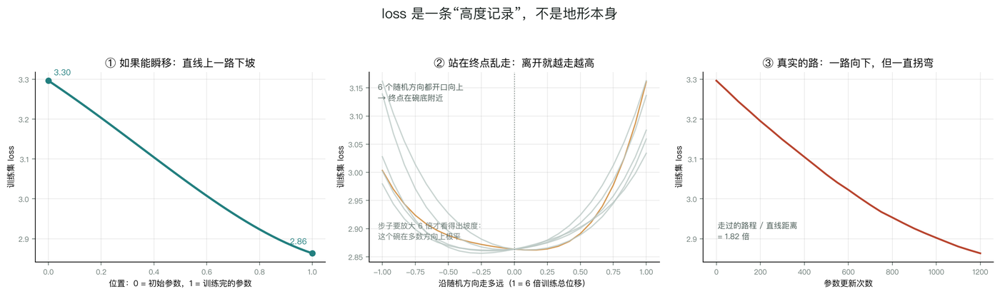
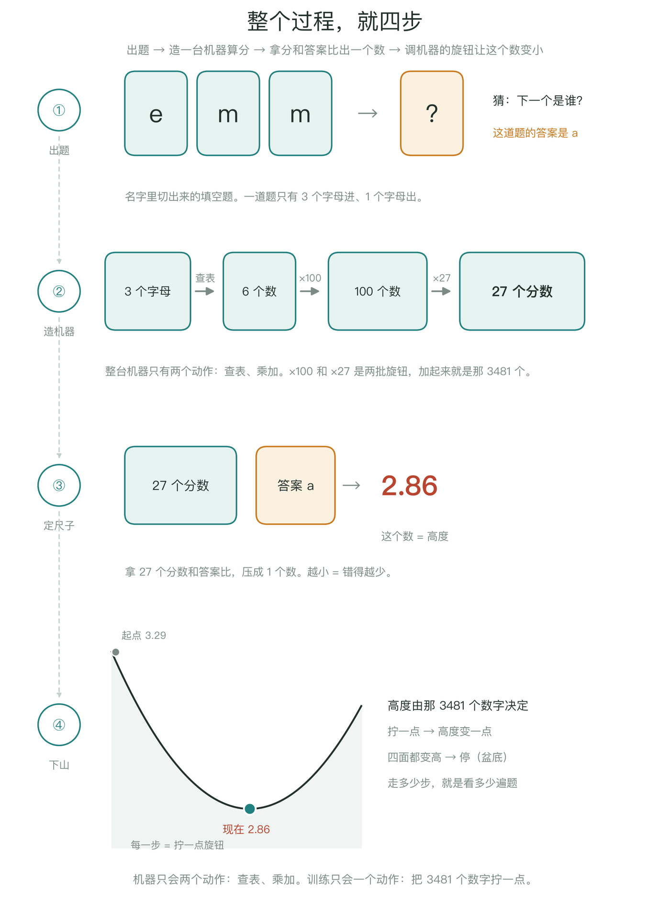
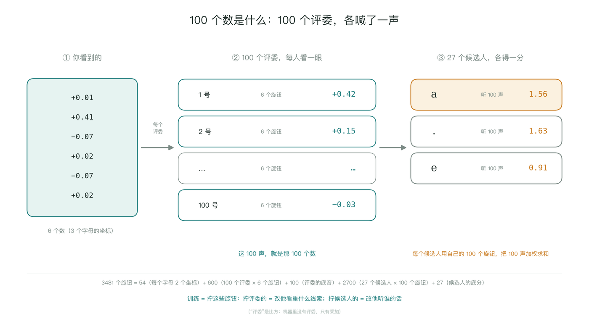
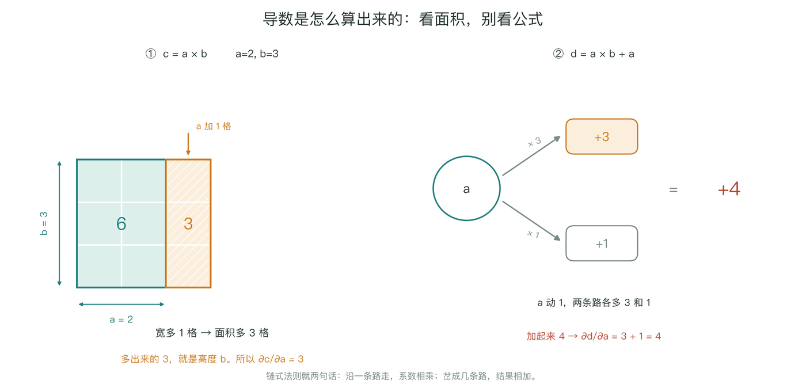
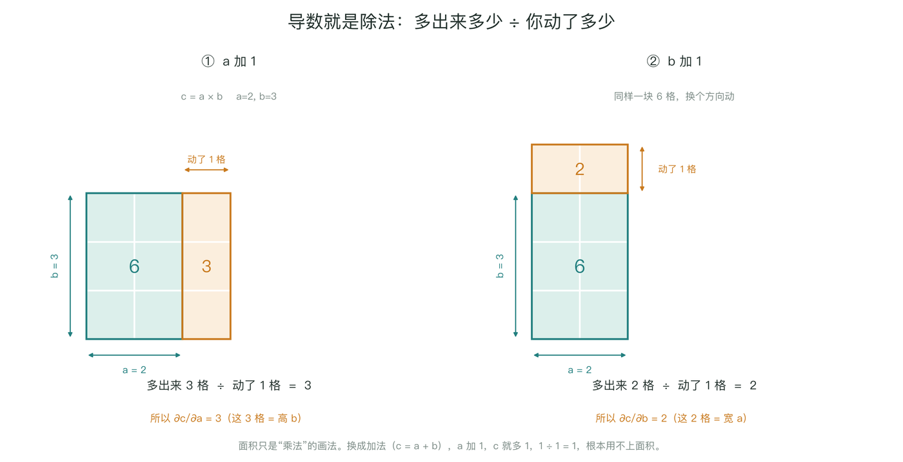
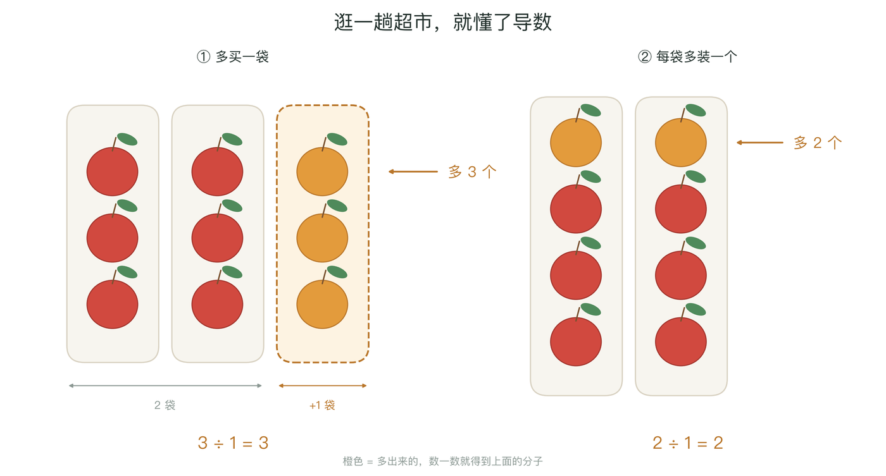
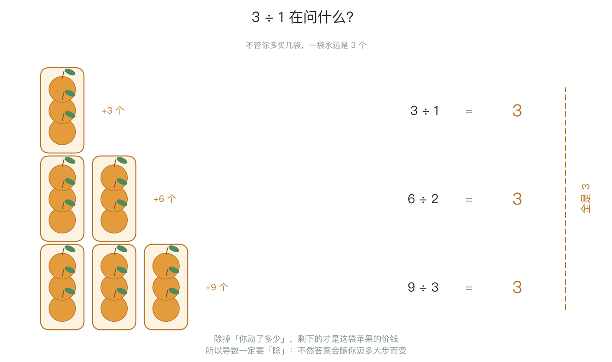
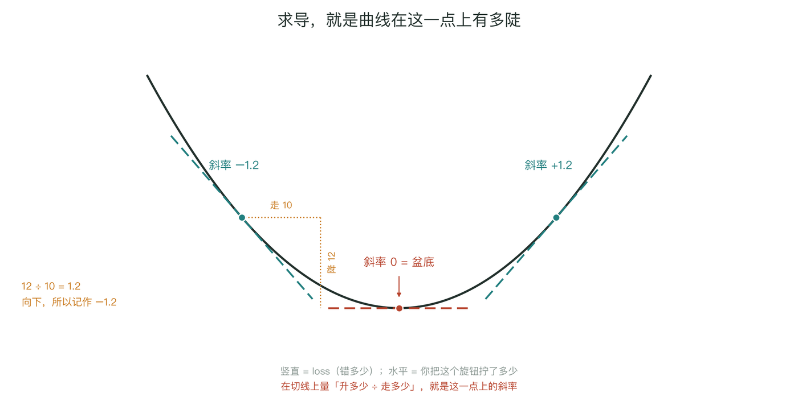
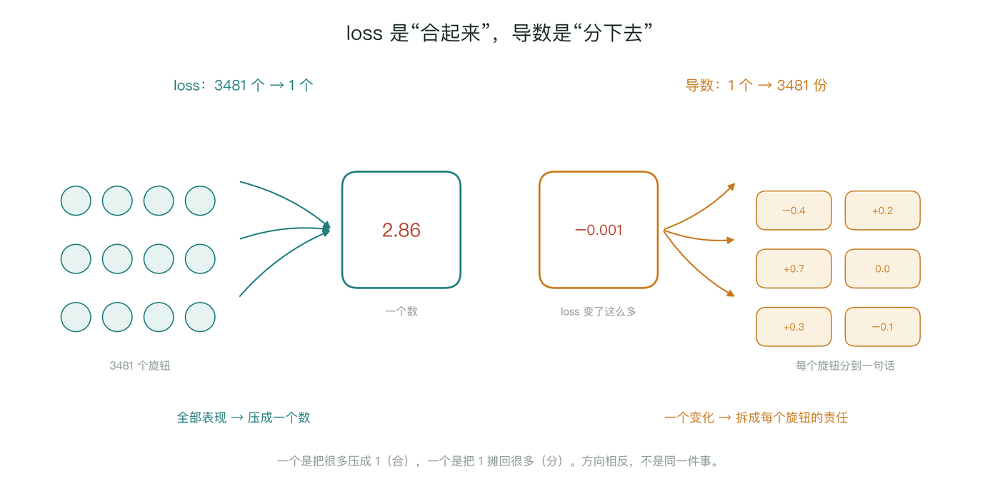

这一段是什么：2026-11-11 围绕步骤 4 的一轮问答整理，按问题归类。图都是当场为了解释而画的示意图，不是课程截图；图里的数字来自本次实跑（seed 42、block 3、D=2、H=100、1200 步），loss 与 notebook 打印的 2.863 / 2.861 / 2.865 一致。
一、这一步到底在干什么
一句话：给最近 3 个字符，给 27 个候选各打一个分数；训练就是调这 3,481 个数字，让正确答案的分数变高。代码里的 forward 就是这条流水线，一共五站。
| 站 | 形状 | 在干什么 | 一句话 |
|---|---|---|---|
| ① 输入 | (N,3) | 3 个字符换成 3 个编号 | 编号只是座位号，e=5、m=13 没有大小含义 |
| ② 查表 | (N,3,2) | 每个编号去 C 表取一行 | 表是 27×2、可训练；两个 m 取到完全一样的数字 |
| ③ 拼接 | (N,6) | 3 组坐标横着排成一条 | 顺序是信息，所以并排而不是相加 |
| ④ 隐层 | (N,100) | 6 个数变 100 个数，过 tanh | 100 个“加权提问”，每个单元一种问法 |
| ⑤ 输出 | (N,27) | 100 个数变 27 个分数 | 还不是概率，softmax 之后才是 |

emm → a。每站只做一件事，括号里是这一站的形状（N=1）。三个最容易误读的地方：
- train 和 dev 两条线重合，不是好消息。1200 步 × 32 条 = 38,400 次看题，而训练集有 182,625 道题，平均每道题只看了 0.21 遍。这叫欠拟合，不是泛化好。
- 固定 32 条能压到 0.86，只证明“管线通了”。那是前向、反向、更新连起来的自检，不能说明学会了新名字。
N不是模型的一部分。(4,3)与(182625,3)只是同时算几张卡；改 batch size 不改参数量。
参数量 3,481 = 54（C 表）+ 600（W1）+ 100（b1）+ 2,700（W2）+ 27（b2）。训练唯一改变的，就是这些数字。
四张细节图


..e → m 与 .em → m 的惊讶度 3.54、3.63 比瞎猜的 3.30 还差——平均 loss 降了，不代表每一步都变好。

二、loss 曲线、下山与盆底
为什么看曲线，而不只看最后一个数？因为曲线是唯一能看见“过程”的窗口。同样一个终点，背后可能是完全不同的训练：平着不降（学习率太小、梯度消失）、剧烈抖动（学习率太大）、突然掉一截（学习率衰减）、train 降而 dev 升（开始背题）。只看终点，这些信息全丢。
为什么像下山？因为没有解析解，只能迭代：每一步做一个局部线性近似，沿负梯度迈一小步。为什么是盆底？任何光滑函数在极小点附近都能写成二次型，开口向上就是碗——这不是巧合，是泰勒展开的必然。
为什么是“越小越好”？这是记账方向：我们把“错”记成正数（-log p），所以越少越好。你也可以反过来记“对”，整张图翻转，结论不变。但要注意：最小值不是 0，而是数据本身的熵。

把这句话落到你自己的模型上，可以量三件事：
- 起点到终点拉一条直线：3.30 → 2.86，几乎单调下降。
- 站在终点沿 6 个随机方向走：全部开口向上；但步子要放大到 6 倍训练总位移，loss 才从 2.86 抬到 3.0 左右——碗在多数方向上极平。
- 真实的路：走过的路程是直线距离的 1.82 倍，一路向下但一直在拐弯。


三、100 个数到底是什么
一句话：100 个数，是 100 个评委各喊了一声。为什么要 100 个？因为一个评委只能学一条死规矩（“最后是 m → 多半是 a”），而真实情况要靠几条线索凑一起（“前面出现过 e” + “最后两个是 mm”）。一个评委看不了这么复杂的东西，所以放 100 个，每人只盯一个角度。
每个评委手里有 6 个旋钮，对着 6 个数拧一遍，加出一个数喊出来。27 个候选人各听这 100 声，但他不是全听——他手里也有 100 个旋钮，决定“我多信 1 号、少信 2 号”。组合就发生在“挑着听”这一步：不是某个评委想明白了组合，而是候选人挑着听。

中间那 100 个数没有人类可读的含义。别问“第 37 个数代表什么”——它只是 37 号评委的发言音量。有含义的只有最后 27 个。
四、导数：从「多买一袋」到「斜率」
先回答一个具体的疑问：c = a × b、a=2, b=3，为什么 ∂c/∂a = 3？因为 a 加 1，c 就加 3——乘法里一个因子天然就是另一个因子的“兑换率”。把它画成面积更直观：宽加 1 格，多出来的竖条正好 3 格，因为高是 3。

c = a×b 的面积，右边是 d = a×b + a 的两条路。链式法则两句话：沿一条路走系数相乘，岔成几条路结果相加。但导数本身不是乘法，是除法：多出来多少 ÷ 你动了多少。面积只是乘法的画法，不是导数的定义。换成加法（c = a+b），a 加 1，c 就多 1，1÷1=1，根本用不上面积。

换成生活场景更好记：a = 买几斤，b = 每斤几块，c = 一共多少钱。多买 1 斤多花 3 块（单价）；每斤涨 1 块多花 2 块（因为你买了 2 斤）。

那 3÷1 里的“÷1”是什么意思？意思是“你只动了 1 个单位”。如果你买 2 袋，就是 6÷2=3；买 3 袋，9÷3=3。除法是为了让答案不随你买多少而变——一袋永远是 3 个，这就是单价。

最后可以把导数直接理解成曲线在某一点的斜率：竖直是 loss（错多少），水平是你把旋钮拧了多少，斜率 = 升多少 ÷ 走多少。抛物线顶点斜率是 0——那就是盆底。

五、loss 是怎么变成 27 个导数的
先看清两个方向：loss 是把 3,481 个旋钮的表现合成 1 个数；导数正好相反，是把这 1 个数的变化拆成 3,481 份责任。一个是合，一个是分。

结论只有一行：导数 = 概率 − 答案。因为 loss 的定义是 -log(p[答案])，而 p 是 softmax 出来的；log 和 softmax 里的 exp 互相对消，最后只剩“预测减真相”。
换成具体的账本更好懂：27 个孩子分 100 个苹果，按“嗓门”（分数）分。答案那个孩子 a 本该拿 100，实际只拿 13，差 −87（要补）；其他孩子多拿的 15、7、65，加起来正好 87（要退）。导数就是“实际拿的 − 应该拿的”。

为什么结果这么干净？因为 loss 本身就是一个减法：loss = logsumexp(27 个分数) − 答案那一格。求导时减号原样传下来，两块各自求导再相减：左边摊开时按 e^z 的比例分，这个比例就是 softmax，所以导数正好是概率；右边只有一格是 1，所以导数就是 one-hot。

那“求导”这个动作到底是什么？就是“提前试一下”：把一个分数抬 0.01，重算 loss（2.0241 → 2.0154），少了 0.00867，除以 0.01 得 0.867；而 backward() 不用试，直接给 0.868。唯一的区别是：你自己试要对 3,481 个旋钮各做一次，求导一次全给。

六、为什么是 27 个分数
27 不是从“3 个字母”来的，是答案有多少种可能：27 = 1 个句号 + 26 个字母，就是词表大小。（3×3×3 也等于 27，那只是巧合。）
两头是独立的：输入那头由“你看几个字”（窗口长度）决定，输出那头由“你能答几个”（词表大小）决定。窗口 3→5，输入从 6 个数变 10 个数，输出仍是 27；词表加 10 个数字，输出变 37，输入不变。


为什么会有“换窗口”这个旋钮？因为它决定模型能看多远：只看 1 个字，它是“所有 m 后面都可能接什么”；看 3 个字，它能利用“emm 后面几乎只接 a”。但看得多也有代价：3 个字的组合约 2 万种，5 个字约 1,400 万种，数据不够就学不动，算得也更慢。现实里这个旋钮叫“上下文长度”，4K / 128K / 1M 说的就是它。
为什么要换词表？因为表里没有的字，模型永远写不出来。比如名字里有 O'Brien，而词表里没有撇号，它就既读不懂也写不出。大模型按“词片”切，词表有几万个 token，答题卡就有几万格。
七、micrograd、训练的一步、容量
micrograd 不“知道”斜率，它只知道“怎么算”斜率。它不认识名字、不知道任务；喂它什么算式，就算什么的斜率。斜率的大小、山的形状，是步骤 4 造出来的。可以记成：micrograd 是计算器，步骤 4 是你按计算器算的那道题。
有了导数，并不等于模型变了。loss.backward() 只把 3,481 个斜率写进 p.grad；真正改模型的是下一行 p -= lr * p.grad。训练一步是三件事：量高度 → 问方向 → 迈一步。

按钮越多就越准吗？训练 loss 变低几乎是必然（小模型是大模型的特殊情况，多出来的旋钮设成 0 就退化了）；但新数据上的表现不是必然，它先降后升——按钮太多就开始背题。而“找不找得到”还取决于步数、学习率、初始化。你这次 3,481 个按钮、只看了 0.21 遍数据，还在“没学够”那一头。

八、几个容易混的概念
“组合”不是组合数学
中文撞词了，英文完全不同：
| 组合数学（combinatorics） | 这里说的“组合线索” | |
|---|---|---|
| 管什么 | 数“有多少种” | 把几样东西揉成一个判断 |
| 典型问题 | 5 个人里选 2 个，几种选法？ | “有 e” + “末尾 mm” → 所以是 a |
| 答案 | 一个整数 | 一个分数 |
有一处确实是组合数学：3 个字母的窗口有 27³ ≈ 19,683 种，100 个评委“挑着听”有 2¹⁰⁰ ≈ 10³⁰ 种。但模型不去枚举这些，它给每个评委一个权重，全听，只是听的程度不同——这叫线性组合，是线性代数。用“加权”绕开“枚举”，正是神经网络能工作的原因之一。
为什么“面试”这个类比成立
| 这里 | 面试现场 |
|---|---|
| 6 个数 | 简历上的 6 项信息 |
| 100 个评委 | 100 个面试官，每人只盯一件事 |
| 27 个候选人 | 27 个求职者竞争同一个岗位 |
| 候选人“挑着听” | 每个求职者知道该找谁背书 |
错位在于：面试只有一个人胜出，模型里 27 个候选人同时各得一分，然后按分数抽签。所以更准确的说法是反过来的——模型不是“像某个现实场景”，而是把现实中“多人打分的评选”抽干成了一套可计算的结构。
“对”是谁定的
不是模型定的，也不是数学定的，是数据和人定的。给 emm，答案是 a，这个 a 来自“emma”这个名字本身；大模型预测下一个词，答案就是文本里的下一个词——文本自己就是答案，不需要人逐条标注。所以第一层答案是：“对” = 你喂进去的那份数据里真实发生过的事。
第二层：判分不是“猜对没猜对”。两个模型都答对 a，一个给 0.90、一个给 0.11，loss 分别是 0.1 和 2.2。它奖励的是“有没有把信心放在对的地方”。
第三层：没有“目标值”，只有停止条件。你设的从来不是“loss 等于几”，而是用哪份数据、用什么公式罚、什么时候停。训到 0 意味着背题，而且 0 在物理上也不可达——数据本身带随机性。所以写 F.cross_entropy 的那一刻，你就已经替模型决定了“什么叫错”。
九、把这条链连起来
如果只留一条主线：
- 出题：名字切成“看 3 个、猜 1 个”。
- 造机器：3 个字母 → 6 个数 → 100 个数 → 27 个分数。只有查表和乘加。
- 定尺子：27 个分数和答案比，压成一个数（loss）。
- 看路：backward 给 3,481 个斜率（= 概率 − 答案，一层层往回乘）。
- 迈步：
p -= lr * p.grad，然后重复。
一句话：loss 是尺子，导数是斜率，迈步才是学习。你这次 1,200 步只把尺子从 3.29 挪到 2.86，因为题只看了 0.21 遍——不是方法不行，是还没走几步。